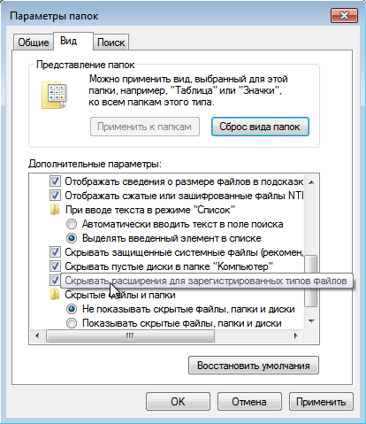
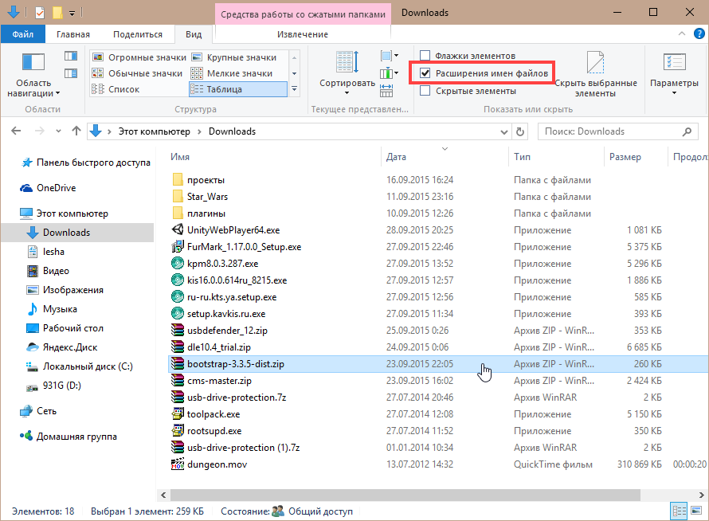

После установки Windows необходимо предпринять ряд мер по защите системы, чтобы обезопасить свой компьютер. В этой статье приводятся примеры того, как вредоносные программы попадают в компьютер и как этому противостоять.
На сегодняшний день есть 3 основных способа распространения вирусов:
• уязвимости ПО
• исполняемые файлы, замаскированные под безобидные (картинку, музыку или видео)
• обман пользователя, в результате чего он сам запускает вирус
Вы можете пользоваться устаревшим архиватором, плеером и графическим редактором, но браузер и почтовый клиент всегда должны быть актуальными потому что устаревшие версии могут содержать уязвимости, которые будут использованы, злоумышленниками для заражения вашего компьютера. Современные браузеры сами следят за обновлениями, но тем не менее механизм авто обновлений иногда даёт сбой. Не забывайте регулярно проверять вручную наличие новых версий. На сегодняшний день могу порекомендовать 2 браузера: Google Chrome и Mozilla Firefox. Не рекомендую пользоваться браузером Internet Explorer из-за его тесной интеграции с Windows.
Если вы всё ещё пользуетесь Windows XP, то вам лучше отключить автозапуск накопителей, т.к. до Windows Vista – это потенциально опасная функция. Чтобы это сделать нужны 2 обновления KB950582 и KB967715. На их основе я сделал отключалку автозапуска для Windows XP.
ВАЖНО! Если у вас стоит Windows с русским MUI, то вам нужен AutorunKiller_ENU, если локализованный русский, то AutorunKiller_RUS (см. как отличить локализованную XP от MUI?)
По умолчанию Windows не показывает расширения файлов. Таким образом легко можно принять исполняемый файл за безобидную картинку или видео.
Чтобы включить показ расширений, зайдите в панель управления → параметры папок и отключите «скрывать расширения для зарегистрированных типов файлов»:

После этого у всех файлов будут видны расширения: .exe .jpg и т.д. Потенциально опасные типы файлов: exe scr hta com bat cmd vbs js jse vbe wsh. Открывайте их только если доверяете источнику.
В Windows 8 и 10 отображение расширений включается ещё проще. В любой папке нажмите Вид → Расширения имен файлов
Из-за того, начиная Windows Vista, Microsoft очень серьёзно поработали над безопасностью своей ОС, многие мошенники вместо поиска уязвимостей пытаются обманом заставить пользователя запустить вредоносный файл.
Самые распространённые уловки – это заманчивые предложения скачать бесплатно или за небольшие деньги программы для взлома Webmoney, ВК или почты. Нужно понимать, что таких программ нет в открытом доступе или они стоят от нескольких тысяч долларов. Пиратское ПО и всевозможные кряки также нередко содержат трояны. Подозрительные файлы всегда можно отправить файл на проверку.
Есть и другой тип вредоносного ПО – crapware, adware. К этой категории относятся различные панели инструментов для браузера, утилиты, меняющие поисковик и домашнюю страницу, рекламные модули. Опасность этих программ в том, что антивирусы могут их не замечать, потому что по сути они не являются вирусами.
Попадают на компьютер такие программы при установке других программ. Например Freemake Video Converter пытается установить аж 3 такие программы: какой-то SHAREit:
а ещё браузер Opera:
и какое-то непонятное расширение
В этом примере программы не являются вредоносными, но ведь я хочу установить видео конвертер, а не браузер и что-то непонятное.
Пользуйтесь антивирусами, но не забывайте, что это только для подстраховки и всегда смотрите что скачивается на компьютер. Создайте несколько учётных записей и работайте под той у которой нет админских прав. Тогда, в случае заражения, вы сможете вернуть контроль над компьютером. Будьте внимательны при установке программ, всегда выбирайте пользовательскую установку и отключайте лишние опции.
Надеюсь данная статья окажется для вас полезной и поможет лучше защищать свой компьютер
{kind=link}
{kind=link}
{kind=link}
{kind=link}
{kind=link}